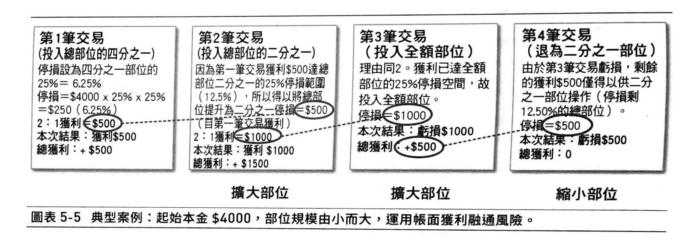
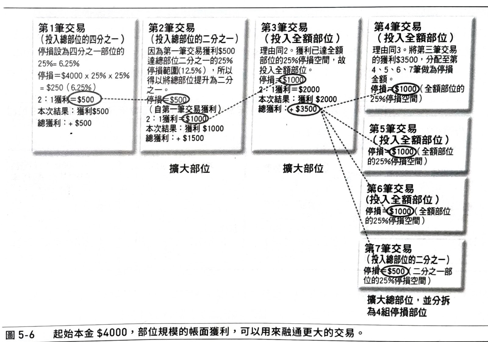

資金控管與試單策略
https://htm0606.pixnet.net/blog/post/406263802-%E8%B3%87%E9%87%91%E6%8E%A7%E7%AE%A1%E6%B3%95?fbclid=IwAR2k9DWoI8dGox8EDvM1j4bnLkRnT_82zlaMwlGVg2imrOoaOsUix8si11w
1.討論你要投入多少錢(即部位)進入股市？專家建議你要「由小而大」一開始先小部位，有賺錢才逐漸加大部位。
2.每一張股票要投入多少錢?專家建議每一筆交易的金額都要一致，這樣才不會被運氣左右績效。
3.每一張股票是一次投入所有的資金還是分批買入？李佛摩建議使用試單策略。
你要投入多少錢?
Larry Williams說道：「投機客生財之道來自他們的資金管理方法，而不是一些神奇的、神秘的系統或煉金術士的秘方。成功的交易會賺錢，成功的交易加上適當的資金管理則會創造龐大的財富。」(「短線交易秘訣」)
在「交易‧創造自己的聖盃」/ 凡‧沙普一書中，也把「部位大小」的設計作為交易上最關鍵的技術
Victor Sperandeo在1978年到1989年的12年間，沒有一年的操作發生虧損，平均年投資報酬率高達70.7%，而被Barron's譽為「華爾街的終結者」，由以下所述的投資哲學，可以看出Victor對於「資金控管」尤為重視。
「...假定你是以季為基礎操作。在一季的開始，任何新部位的規模都應該很小(相對於風險資本而言)，因為當期還沒有累積獲利。...反之，如果你有獲利，應該將一部份獲利運用在新部位上，並將其餘獲利存入銀行；如此，你不但可以增加獲利的潛能，又可以保障一部份的獲利。...」（詳見後文）
本文討論資金控管的方法，以下各種方法本人較喜歡Mark Minervini的「由小而大」。
馬克的方法簡述如下：由小而大，把資金分為三個部位大小(25%,50%,100%)，最大虧損為每個部位的25%，規則一：總獲利賺到某個部位的最大虧損，部位就提升為那個部位，規則二：總獲利小於某個部位的最大虧損，就降級到總獲利仍大於該部位最大虧損之部位。
※超級績效的舉例很難懂，倒不如用歸納法歸納為２個規則。
以下以總資金$4000說明如下：
| 部位大小 | A(25%) | B(50%) | C(100%) |
|---|---|---|---|
| $1000 | $2000 | $4000 | |
| 最大虧損25% | AL | BL | CL |
| $250 | $500 | $1000 |
第一次交易，起始部位為A($1000)，如果賺到$500>=BL(規則一)，則部位提升為B($2000)。
第二次交易，如果再賺到$500，則總獲利為$1000>=CL(規則一)，則部位提升為C($4000)。
第三次交易，若虧損$500，則總獲利為$500(1000-500)<=CL AND >=BL(規則二)，則部位降為
以下列出各家的資金控管方法供參考，你可以選擇你喜歡的。
※上表可下載google試算表範本【資金控管計算範本】
每一張股票要投入多少錢？
專家建議每一筆交易的金額都要一致，這樣才不會被運氣左右績效。
比如說你買2支股票，一支賺10%，一支賠10%，你的績效本應是0，但因為股價不同，如前一支股價100元賺10%，是賺10元，後一支股價20元賠10%，是賠2元，總計賺8元，但其實是因為運氣造成績效的波動。每筆交易金額不一致，即使你使用一套正報酬率是２０％的無敵系統，得到的績效也是被運氣主宰的。
所以你必須每一支股票交易金額都一樣(資金不大者可用零股)，才能維持穩定的績效表現。在【資金控管計算範本】中有「零股計算」工作表，如下：
| A股票檔數 | 10.00 | |
|---|---|---|
| B可投入資金(千元) | 250.00 | 見[資金控管法之部位] |
| C每檔股票可投入金額(元) | 25,000.00 | =B*1000/A |
| D股價 | 100.00 | |
| E可買零股股數 | 250.00 | =C/D(四捨五入) |
| F半刀 | 125 | =E/2 |
| G投入金額 | 12,500 |
說明如下：
A股票檔數：基本面操作者建議不要超過7檔，技術面操作者可10檔。
B可投入資金(千元)：就是前面的你要投入多少錢？比如你股票總資金為100萬，一開始只投入25%就是25萬，則B=250(千元)
C每檔股票可投入金額(元)：＝B*1000/A，
D股價：輸入股價
E可買零股股數：=C/D
F半刀或三刀或四刀：
李佛摩提到：「很多投機客在買進或賣出時都太衝動，幾乎所有部位都是在同一價位取得，而那是錯誤且危險的作法。」李佛摩採用的試單操作方法，是將資金分成20%、20%、20%、40%，試單時先投入第一筆20%的資金，如果行情發展正確（帳面上呈現獲利），才會再投入後續的資金部位。
我的試單策略
使用三刀流。自上次買進點漲3%加碼一次，共加碼2次。
雖然在測試中(見C:\Users\eagle9971\Google 雲端硬碟\我的投資\StockSD\系統測試\BBBRO_1.ods\試單策略Y))6刀流在行情好的時候可以獲得「讓我一次賺個夠」的效果，但也只有在2020/6/18~2022/4/22這種史無前例的瘋牛行情中出現，而三刀流在12年的測試期間表現得比四刀流「穩定」，犧牲一點獲利(<3%)，所以決定使用三刀流。
而變動出場點為-12%,-6%,0%。指總獲利1批時-12%，2批時-6%，3批時沒獲利就出場。
一日二刀流
所謂的「自上次買進點漲3%加碼一次」是指隔日尾盤嗎？本來無此限制，比如原先跌5%時買進第一筆，盤中漲3%加碼1次，再漲3%再加碼1次，三刀流一日內就能完成全部部位。但要考慮實際情況，如果盤中所有部位買滿，然後從漲停跌到跌停，你有沒有辦法及時出脫？除非你有融資、融券可當日沖銷，否則你只好等到明日開盤再賣，如果明日開盤再跌停，結果你一次就是滿檔虧損20%。這種情形會不會發生？老實說，不常見但有機會發生。
所以，最多你「一日二刀流」，第二刀必須在尾盤才出手。這樣就不可能加碼後變成跌停（因為已經是尾盤）。那如果一日尾盤漲幅超過６％是否一次加２碼？還是不要，因為大漲後回檔的機率很大，沒有必要讓自己陷於險境。
參考文章
由小而大
(摘自「超級績效2－－投資冠軍的操盤思維」/ Mark Minervini)
我渴望達成偉大而高貴的工作，但我最重要的任務，就是把小工作都當成偉大而高貴的工作來做。 ——海倫，凱勒
人生的任何重大成就，都是由小而大，慢慢累積而成。 股票交易也是如此。 這不是一種「不成功便成仁」的活動，沒有必要將其視為全有或全無的決策，你大可一點一滴慢慢來。 我幾乎從未奮不顧身地跳進股票市場，反之一般會先試試水溫，建立幾個規模很小的部位。 如果情況順利，我才會加碼，或增添其他部位。如果情況仍然符合預期，我才會增加整體曝險，態度變得更為積極。如此才不至於招致麻煩，當一切都順利時， 才具有賺大錢的條件。
剛開始從事股票交易，應該先從現金部位開始，而且要等到立足點穩定之後，交易規模與整體曝險程度才應該慢慢增加。 關於擴大交易規模，我秉持簡單的哲學：如果二五％或五O％的現金部位都無法賺錢，那為什麼要擴大曝險程度到七五％或百分之百，甚至動用融資呢？ 事實的情況剛好相反：交易發展如果不符合預期，應該考慮縮小交易規模，或是繼續維持現狀。
嚴格遵循交易規則，每逢交易不順利，就縮小部位規模；因此，當交易最不順遂的時候，你的交易規模呈現最小狀態。這才符合風險控制的原理！反之，如果抱著「輸多賭大」的心理，交易愈不順利，愈是增添曝險程度，則在交易最 不順手的時候，你將持有最大部位，這等於是在替自己找麻煩。
以上這方面的紀律，功能不全然在於防禦。 嚴格遵循這項法則，部位曝險將在交易最順手的時候，擴張到最大程度，這才有助於創造超級績效。 所以，你是讓資金發揮複利作用，不是虧損，但前提是你必須嚴格遵循這項法則。
總之，部位如果呈現虧損，實在沒有理由擴大交易規模。反之，交易如果順手，可以運用一帳面獲利融通部位，而且不至於增添風險。
容我稍微說明我的作法：我通常最初只建立四分之一的部位（請參考圖表5-5）。賺錢之後，我會讓既有部位擴大一倍，直到持有完全部位為止。我的賺錢部位會擴張規模，虧損部位則縮減規模 。
假定我的盈/虧比率為二：一，勝率為五O％。 如果交易順利而得以連續進行三筆成功交易四分之一部位，二分之一部位，以及全額部位其獲利將足以讓我融通三個完整部位和一個二分之一部位（請參考圖表5- 6）。


圖5-6說明
| 部位大小 | A(25%) | B(50%) | C(100%) |
|---|---|---|---|
| $1000 | $2000 | $4000 | |
| 最大虧損25% | AL | BL | CL |
| $250 | $500 | $1000 |
| 交易序次 | 投入部位 | 獲利 | 總盈虧 | 備註 |
|---|---|---|---|---|
| 1 | $1000 | $500 | $500 | 獲利達BL，擴大部位至B(50%) |
| 2 | $2000 | $1000 | $1500 | 獲利達CL，擴大部位至C(100%) |
| 3 | $4000 | $2000 | $3500 | 獲利達CL，繼續維持部位C(100%) |
| 4 | $4000 | -$1000 | $2500 | 獲利仍達CL，繼續維持部位C(100%) |
| 5 | $4000 | -$1000 | $1500 | 獲利仍達CL，繼續維持部位C(100%) |
| 6 | $4000 | -$1000 | $500 | 獲利只達BL，縮小部位至B(50%) |
| 7 | $2000 |
幽靈規則二
「毫無例外並且正確的對你的獲利部位加碼。正確的交易本身實際上並不能產生豐厚的利潤。如果你真的希望自己擁有以交易謀生或賺外快的能力，你就應該在你的獲利倉位上增加籌碼。否則的話，你最多隻能保本。」
幽靈理論的見證
出處：https://www.cmoney.tw/notes/note-detail.aspx?nid=13886
掌握加碼2大原則！讓你避免風險，獲利加倍！
7月 2014年
到底要怎麼加碼才對?1.有獲利了，才能加碼下單2.下跌時千萬不能追買攤平成本，這樣只會越攤越平這邊用2個故事來跟大家分享，贏家們他們是怎麼做加碼的。
期貨當沖高手的加碼策略
在我的公司裡面，有一位每天來看盤下單的大哥，在期貨市場10多年，已經賺到了好幾棟房子，但每天的穿著卻是很簡樸，在這邊早上安安靜靜的在下單，下完收盤後就走了。 我很好奇他怎麼有辦法做到這樣，10多年來都靠期貨為生，
我就厚著臉皮開口問他，他人很好，跟我講了一個很重要的觀念。
「我賠錢時永遠只賠 1 口，賺錢時卻是 5口、20口在賺！」這位大哥說。我問，什麼意思？
他說 「我還沒有很明確趨勢出來以前，我會先用一口單試單，嚴守停損。」
「一旦趨勢很明確出現了，我有獲利就代表我做對邊，我就會開始加碼。」
「所以，一整個波段抱下來，我都是10口、20口在賺的。」
程式交易高手S先生的加碼策略
又有一個很好的機會，跟一位程式交易的贏家Steven聊天(有出書的作者)， 發現他的加碼邏輯很值得學習。他說，他永遠都是把他的風險值賺到了，才允許進場訊號下單。什麼意思？
假設，我總資金100萬。 我每一筆交易的風險是1萬元。也就是每一筆交易，要是虧損超過1萬元，就立刻砍倉。所以每一次的交易風險只有 1%，不會傷到本。
舉例：假設我在8500買進一口期貨契約(1點200元），風控50點(1萬元）。假如行情向上，上漲到了8550，這時我的未平倉獲利已經到了1萬元，是不是跟我的風險值相當了？那這時，就允許加碼第二口單。
因為第二口單下單時，你口袋已經有1萬的獲利了，所以第二口單，幾乎等同於新單。
這時，停損點跟著上移到8500。然後這時候，若是出現反向出場訊號，全出。
(上面這個例子只是概念說明，並不是他的程式真的這樣執行喔～）
為什麼要這樣做？因為我們無法預測明天，我們只能在目前的市況，站在機率比較高的那邊交易，但這也是無法100％保證一定會照我們想的走。所以，我們在試單階段，要一定要先用很小很小的部位試單。小心謹慎操作。...
資金管理才是輸贏的關鍵
在賭場理最常見到賭客賠掉所有賭金的方法是：輸的時候加碼再玩，也就是說，越輸就玩越大。贏家會反其道而行，輸的時候減碼經營，贏的時候大膽出擊。當然，如果每次都全押，他會以可怕驚人的速度一直贏到最後一次，那一次把之前贏的全部歸零。你的資金必須有適當的管理，每次全押，或越賠玩越大的方法都是必須避免的。
Larry Williams說道：「投機客生財之道來自他們的資金管理方法，而不是一些神奇的、神秘的系統或煉金術士的秘方。成功的交易會賺錢，成功的交易加上適當的資金管理則會創造龐大的財富。」(「短線交易秘訣」)
在「交易‧創造自己的聖盃」/ 凡‧沙普一書中，也把「部位大小」的設計作為交易上最關鍵的技術。
Victor Sperandeo在1978年到1989年的12年間，沒有一年的操作發生虧損，平均年投資報酬率高達70.7%，而被Barron's譽為「華爾街的終結者」，由以下所述的投資哲學，可以看出Victor對於「資金控管」尤為重視。
Victor：一致性的獲利能力
專業投機原理 - Victor Sperandeo / ISBN:9578457189寰宇
...**如果資本要穩定增加，你必須要有一致性的獲利能力；如果你要有一致性的獲利能力，必須要保障你的獲利，並儘可能降低損失。**因此，你必須衡量每一項決策的風險與報酬的關係，根據已經累積的獲利或虧損評估風險，如此才能增加一致性的勝算。
例如，假定你是以季為基礎操作。在一季的開始，任何新部位的規模都應該很小(相對於風險資本而言)，因為當期還沒有累積獲利。另外，你應該預先設定承認自己錯誤的出場點，一旦行情觸及這個價位，你便應該認賠出場。如果第一筆交易發生虧損，任何新部位都應該根據損失而按比例縮小。依此方式交易，任何一季結束時，你都不會虧損所有的風險資本－－你永遠還有籌碼。反之，如果你有獲利，應該將一部份獲利運用在新部位上，並將其餘獲利存入銀行；如此，你不但可以增加獲利的潛能，又可以保障一部份的獲利。
如果我是一位年輕的投機者，並擁有5萬美元的資金交易商品期貨，我最初的部位不曾超過總資本的10%－－5.000美元並設定停損而將潛在的損失侷限在10%至20%之間－－500美元至1,000美元之間的損失。換言之，根據這項設計，我的虧損絕對不曾超過總風險資本的1%至2%。如果第一筆交易發生1,000美元的損失，則次筆交易的部位將減至4，000美元，並將潛在損失設定在400美元至800美元之間。依此類推。
就另一方面來說，如果我第一筆交易獲利2,000美元，我將存入銀行1,000美元，並將次一個交易部位增至6,000美元，這將增加我的起始(initial)風險資本(5.000美元)達20%，而實際(actual)風險資本也增加相同的金額。依此方式，即使我下一筆交易發生虧損，就整個期間來說還是有獲利(譯按：這是指一筆交易最多虧損20%而言)。如果我對於行情的判斷有50%的正確機會，則這種交易策略將可以創造相當可觀的收獲。假設我頂多隻接受1:3的風險/報酬比率，即使我每二筆交易僅有一次獲利，我的收入仍然相當可觀。換言之，如果你每一筆交易，可能的(probable)報酬至少是客觀可衡量(objectively measurable)之潛在損失的三倍，長期下來，你便可以維持一致性的獲利能力。...
三一理論
「孫子兵法與期貨股票實戰」 - 陳富村 / ISBN:9861275002
依筆者在擲骰子的經驗中，發現資金控管的問題，完全是由市場決定的；贏時加碼，贏三倍以上才可以加碼一倍。例如以美金10元為基本下注，贏30元以上才可加碼為每次20元下注；最好是贏50元才加碼。當加碼後輸時，下次下注立刻減碼為10元，如果又輸，還是10元，再輸還是10元；一贏之後立刻恢復20元，又贏還是20元；等到贏三倍60元時，再考慮加碼為40元；輸時立刻又回到20元，最後例如贏到180元，這時可加碼到60元下注了!但若一輸則立刻回到30元，再輸還是30元下注；當基本金額加到100元與300元層級時，還是要保持三比一的比例；輸絕不加碼，贏了就加碼。以全部的資金為單位，每次最大下注的金額不超過全部資金的百分之十五。因為臺灣的期貨經紀商在下注虧損百分之七十時，就會自動把客戶三振出局；因此用全部資金的百分之十五為最高限制，也就是虧損金額最高不可超過百分之十。這樣的資金控管，進可攻退可守，以保命為最高設計；絕不是由自己的意志來決定下注多少，這是筆者的發明，是由隨機理論的賭骰子中得到的證明。
用之於期貨交易，虧損不超過一倍。贏時緊咬不放，贏多少由獲利停損決定出場，而不是投資者用波浪理論，或什麼壓力、支撐決定；出場是沒有自我的意志的。因此，資金控管絕不是投資人高興如何下注就怎麼下，投資人所能決定的只有基本額度的下注；加減碼沒有個人意志，這是贏家贏大輸小之法。其重要性比任何技術理論或電腦系統更關鍵，也不需仰賴一大堆公式；那些公式一般人看不懂也不必懂，投資人只要會加減乘除即可！股票加減碼也能比照這原理，投資者可自行調整。
Elder：如何防範鯊魚與食人魚的攻擊
「... 食人魚是一種熱帶淡水魚，比一個男人的手大不了多少，卻有兩排銳利牙齒。這種魚看起來不是很危險，但如果狗、人或驢子掉進熱帶河流，一群食人魚就會一撲而上，不停撕咬，受害者根本招架不住。一頭走進水裡的公牛若是遭到食人魚攻擊，只消幾分鐘，水裡就只剩下骨骸上下浮沉。交易人以2%準則防範鯊魚攻擊，但仍然需要防範食人魚。6%準則可以讓你不致被一小口一小口咬死。...」-- Elder
Elder的資金管理方程式
以下摘自「走進我的交易室」/ Dr. Alexander Elder
先計算利潤的交易新手是本末倒置，他們應該先計算風險。如果你遵循2%和6%準則，要問自己：最大的容許風險是多少?
適當的資金管理步驟如下：
1. 每個月第一天衡量你的帳戶價值－－現金、相當於現金的資產，以及末軋平部位的總和。
2. 計算交易資金的2%，這是任何一筆交易能夠承受風險的上限。
3. 計算資金的6%，這是任何一個月容許發生虧損的上限，超過這個上限，你就必須軋平所有交易，停止交易，直到月底。
4. 每一筆交易都要決定進場點和到價出場點，以金額表示每股或每口合約所能承受的風險。
5. 拿「交易資金的2%」除以「每股風險」，算出你可以交易多少股或多少口合約。取整數時，是向下取較低的數字。
6. 計算所有未軋平部位的風險，方法是以「進場點到目前到價出場點的距離」，乘以「股數或合約數」。如果總風險佔帳戶的4%或以下，或許可以再建立另一個部位，因為目前的交易將增加2%風險，使得總風險達到6%。請記住：你不必每股交易都承受2%風險，如果需要，你可以承受較低風險。 6. 只有在達到以上所有條件之後才交易。
範例
把2%準則加上6%準則，當作你自己的交易經理。我舉個例子來說明，如何利用這些準則進場交易。為了簡單起見，在此假設任何一筆交易拿去冒險的錢佔淨值的2%，但事實上我們希望承受更低的風險。
一位交易人在月底時計算他的淨值，發現有l0萬美元，沒有末軋平部位。他記下下個月最高的風險水準：每筆交易2%或2，000美元，以及整個帳戶6%或6，000美元。
幾天後，這位交易人發現股票A非常吸引人。他算好在哪裡下到價出場單，建立了一個部位，承受2，000美元的風險，佔資金的2%。幾天後，他又發現股票B不錯，做了一筆類似的交易，再拿2，000美元去冒險。
那個星期結束前，他再買進股票C，一樣承受2，000美元的風險。
下個星期，他看到股票D，比前面三檔股票還吸引人。應該買嗎?不可以，因為他的帳戶已經承受6%的風險。他有三個末軋平交易，各冒2%的風險，如果市場走勢不利，可能虧損6%。6%準則禁止他再拿任何錢去冒險。
幾天後，股票A大漲，他將到價出場點移到損益兩平點之上。僅僅幾天之前，他不能買的股票D看起來仍然很吸引人。現在他可以買嗎?可以，因為他目前承受的風險只佔帳戶4%。股票B承受2%風險，股票C承受另外2%風險，但股票A沒有承受任何風險，因為它的到價出場點高於損益兩平水準。這位交易人買了股票D，砸下另外2，000美元或帳戶的2%去冒險。
那個星期稍後，這位交易人看到後市極為看漲的股票E。他可以買嗎?根據6%準則，不能買，因為他的帳戶已經有股票B、C、D承受了6%的風險(他的股票A已經沒有承受任何資金上的風險)。他必須放棄股票E。
幾天後，股票B下跌，跌到它的到價出場點。股票E看起來仍然很好。他可以買嗎?不可以，因為他已經在股票B賠了2%，而股票C和D仍然承受4%的風險。這時再建立另一個部位，會使他超過每個月承受6%風險的上限。
6%準則保護你不受食人魚攻擊。當牠們開始撕咬你，就立刻離開水中，不要讓那駭人的魚咬死你。如果你每筆交易承受的風險低於2%，那麼你可能同時擁有三個以上的部位。如果每筆交易只承受帳戶淨值1%的風險，那麼你可以建立六個部位，才會到達6%的上限。6%準則根據上個月月底的帳戶餘額，保護你的淨值，不考慮你這個月可能賺到的額外利潤。
如果進入新月分時，你擁有很大的末軋平利潤，那麼你必須重新計算自己的到價出場點和交易規模，不讓新的總淨值中，有任何一筆交易暴露在2%以上的風險，而所有的末軋平交易加起來則不超過6%。每當你表現不錯，月底之前帳戶價值上升，那麼6%準則允許你下個月加大交易規模。如果你表現不好，帳戶金額縮水，它就會限縮你下個月的交易規模。